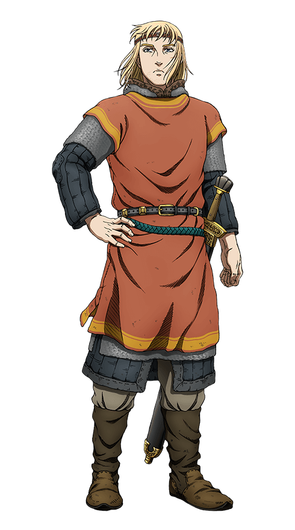
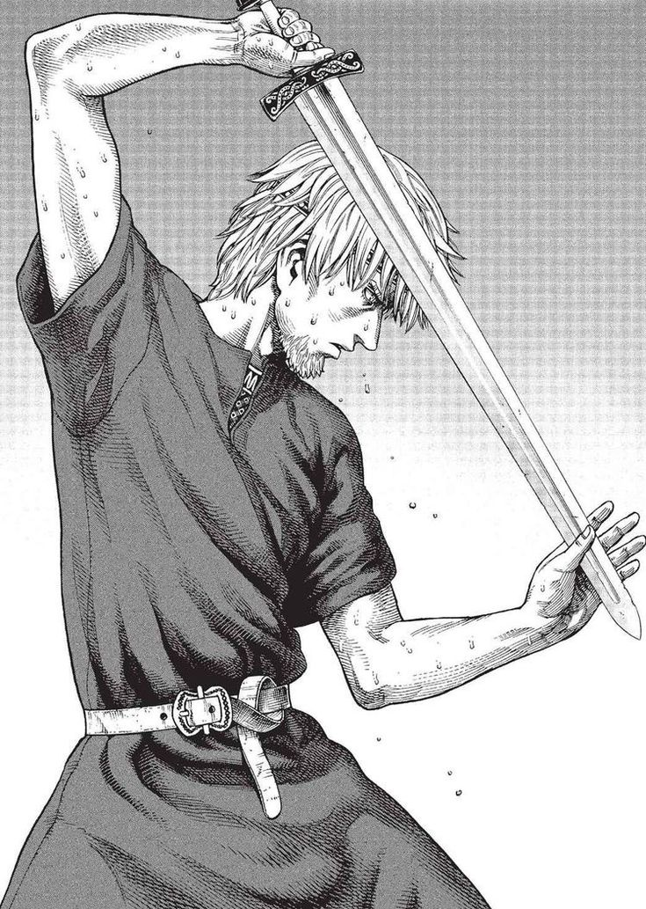

Canute
About Canute
Canute is the king of Denmark and England, succeeding his father Sweyn for England, and his brother Harald for Denmark. He appears effeminate and weak, always hiding behind his retainer Ragnar, but sticks up for himself against Thorfinn's insults. His weak appearance and his strong Christian faith earn him the mockery of the Viking band.
Canute developed a grudge on his father after discovering he had marked Canute for death. Seeing use in him, Askeladd assassinated Forkbeard, making Canute the King of Denmark. Canute started working towards the goal of building a paradise on Earth, becoming a strong, ruthless leader and a brilliant general.
Appearance
Canute is first introduced with long blond hair, large blue eyes, pouty lips, and a feminine-looking face. Up to his late teens, he is often confused for a girl.His beautiful likeness left many of his men wondering if he was the reincarnation of their goddess Freyja.
After becoming king, Canute cuts his hair short and grows some facial hair.Below his left eye is a scar that was left by Thorfinn.
Personality
Although initially timid, weak and always hiding behind Ragnar, Canute later begins to stick up for himself as Thorfinn constantly puts him down. Wanting revenge on his father for being secretly marked for death, Canute develops a more commanding and demanding personality. This was brought out by Askeladd's assassination of Ragnar, whom he wanted to eliminate as he was standing in the way of Canute's emotional maturity. Even Thorkell once commented on how Canute had the same mysterious eyes as his old comrade Thors, when he finally became a "true warrior".
Later on, Canute becomes a clever and manipulative character who doesn't hesitate to get rid of anyone getting into his way of building a paradise on Earth for the Vikings.
Abilities
Canute is better known as a cunning and charismatic king, his enemies die swiftly and quietly from poison and assassinations due to his clever scheming. Canute takes up sword practice later in the series and becomes a decent fighter despite his strong hatred for weapons in his youth. With his North Sea Empire and the vast fleet he becomes a terrifying force to be reckoned with.